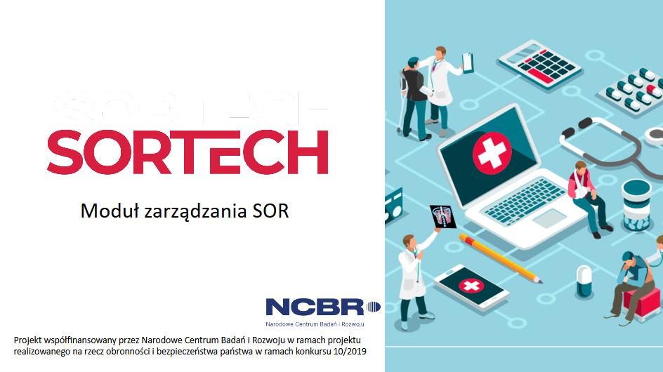

<mat-dialog-content>
    
</mat-dialog-content>
<p style="margin-left: 20px;"> Wersja systemu: 1.0</p>
<mat-dialog-actions align="end">
<button mat-raised-button color="primary" mat-dialog-close tabindex="-1">{{cancelButtonText}}</button>
</mat-dialog-actions>